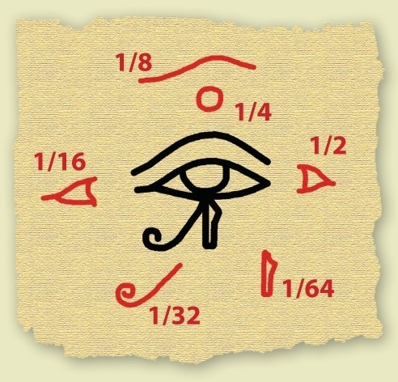
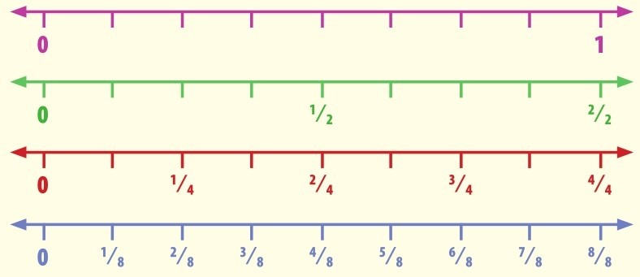
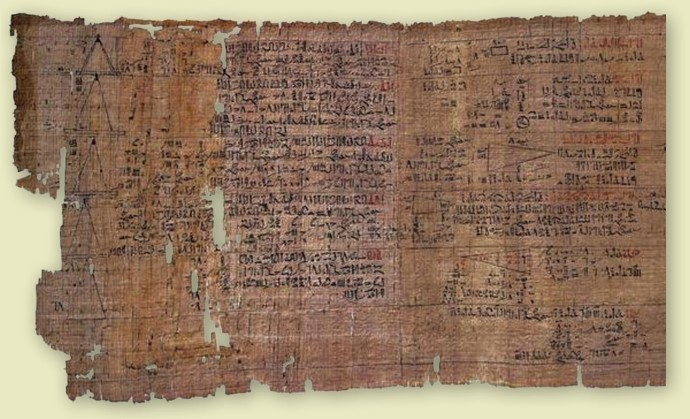
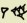
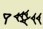
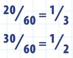
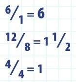

分数这个词来自拉丁语“broken”，即“分开”的意思。那时的分数是比1小的数，是把1分成更小的部分。如今我们使用分数的方法始于400年前，在人们还为分数是否是数争论不休的时候就开始了。
参加过生日宴会的人都知道分数：一个蛋糕该切几块？如果有两位宾客，就切成两半——尽管有点贪吃呢。4位宾客就各拿1/4，12位宾客就各拿1/12。人再多的话可能得再来一个蛋糕了。尽管数学界对分数直到17世纪才统一意见，但古人显然懂得数（或者蛋糕）是可以分成好几部分（块）的[shu籍 分.享 V信jnztxy]。
眼与口
古埃及人首先发明了书写分数的办法。荷鲁斯之眼源自鹰头天神荷鲁斯，是古埃及的一个符号。其中眼睛表示1，它的各部分进行了划分（见左图），用于分割谷物、面粉及其他有价作物。分数的另一种写法是在一个嘴的形状下面写个数。嘴表示1，下面的数表示分成了几块。这套系统可以表示任意分数，它们被称为单位分数，分子是1。1/2、1/5、1/23都是单位分数，2/3、3/7、9/23不是。

荷鲁斯之眼，源自古埃及鹰头天神的符号，被分成了几部分，用于表示对食物和饮用水等的划分。
分子与分母
我们把分数写成两个数，一个在上，一个在下。底下的是分母，表示1分成多少份。上面的是分子，表示在这个分数里占了多少份。这个想法来自公元7世纪的印度，阿拉伯学者随后在两个数之间加一横杠，分数的意义就更明确了。

编制分数表
古埃及数学里不许可非单位分数出现。于是四分之三，或者说3/4，分成了单位分数1/2+1/4。单位分数的重复叠加也不许可， 所以把2/11变成1/11+1/11也是不行的。古埃及数学家编制了一份分数表，把众多分数转化成他们许可使用的单位分数。这个规则把事情变得复杂了。在古埃及的宴会上把3块糕点分给5个客人，意味着每个客人各得到3小块：一块1/3的，一块1/5的，最后是一块1/15的。
六十进制的使用

林德手卷是公元前1650年一本古埃及数学书的残片，包含了许多用古埃及人的方法计算分数的难题。
巴比伦分数是基于数字60的，这跟他们的计数系统（见第17页）各部分协调一致。巴比伦系统把个位数字1到59写在数的右边，大数（60及以上）写在左边。（其实我们的数字系统也是如出一辙，只不过用的是十进制，而不是六十进制。）对于分数，巴比伦人把小数写在个位的右边。举例：

即1×60+40=100，
即1×60+40+20/60=。这套系统跟16世纪发展的十进制十分相似。但你或许心存疑问：怎么知道哪个是个位，哪个是分数呢？哎，这对于巴比伦数学家来说也是困惑不已的大难题。有理数
五 = = 5
二又二分之一=
四分之一=
有理数包括所有自然数：如1，2， 3，等等（见第14页）；也包括你能想到的分数：1/2，3/5，12/43，等等。非零有理数的规则是可以写成两个自然数组成的分数。整数可以写成分数：5就是5/1。带分数（大于1的分数）可以用假分数来表示：就是5/2。
意义
罗马人不写分数，但他们有相应的词汇。标准的分割是把东西分成12份，1/12是“uncia”。6个uncia（一半）叫作“semis”，1/24是“semuncia”，1/144是“scripulum”。7世纪以来，印度和阿拉伯数学家使用今天我们也在用的分子与分母的系统（见第27页方框），并将其发扬光大。但是，分数究竟本身就是个真真正正的数呢，抑或不过是两个整数的比值而已？比方说，1/2是一个数，还是1除以2的答案？事实上，二者皆然。二者都能帮助我们了解各种各样的数。
莱昂哈德·欧拉，数学家，在18世纪拓展了分数的现代用途。
大家伙的小部分
分数是数，但不是用来计数的。它们属于一个叫作有理数的大集合。有理数就是可以写成分数的数（见第28页方框）。但是有些数不能写成分数，那是什么数？毕达哥拉斯，一位赫赫有名的古希腊数学家，首先发现了它（见第36页）。
参见：
▶勾股定理和勾股数，第36页
▶十进制小数，第92页
原理
现在我们知道了分数的由来，下面来看看分数的用法。
把现代数学里的分数转化成古埃及的单位分数，意味着变成一些分子为1的分数（译者注：不过，在古埃及数学里可不许分解成重复的单位分数哦）。
巴比伦分数是六十进制的，如今，我们用化简的分数。

罗马分数是写成文字的，但可以转化成数字。
3 uncia=
12 semuncia=
假分数是大于或等于1的分数，可以转化为一个整数或一个整数和一个分数的和。
